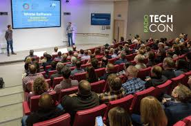

History
TechCon was founded in 2012 as a small meetup for local tech enthusiasts. Over the years, it has evolved into a global platform bringing together top minds in technology, innovation, and business. The conference has grown to include thousands of attendees and hundreds of industry-leading speakers from around the world.
